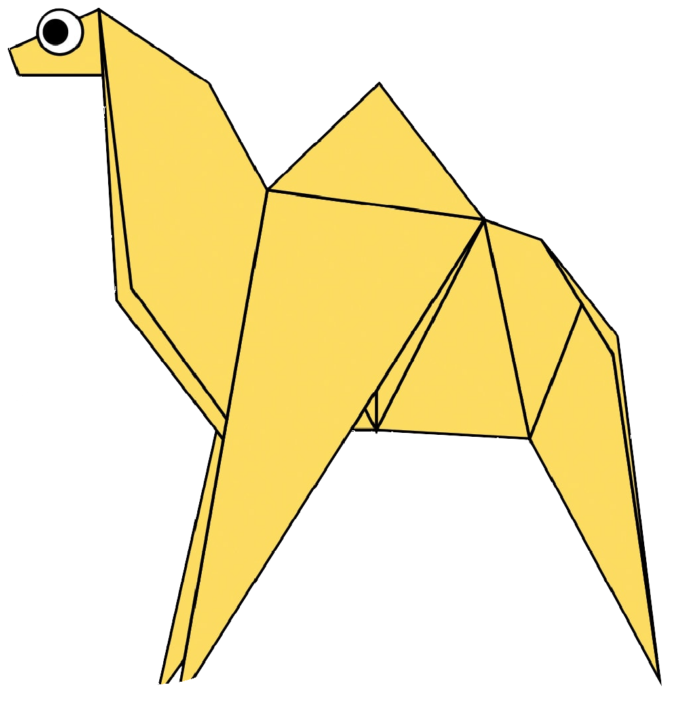
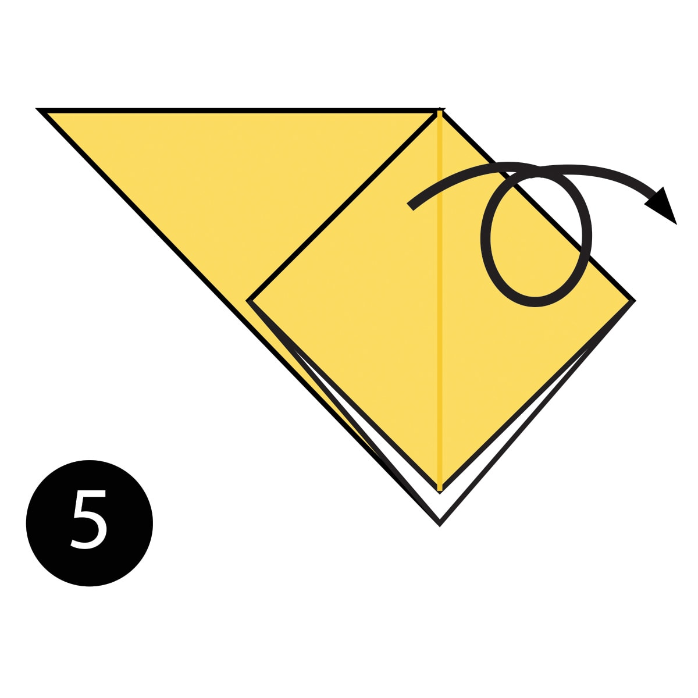
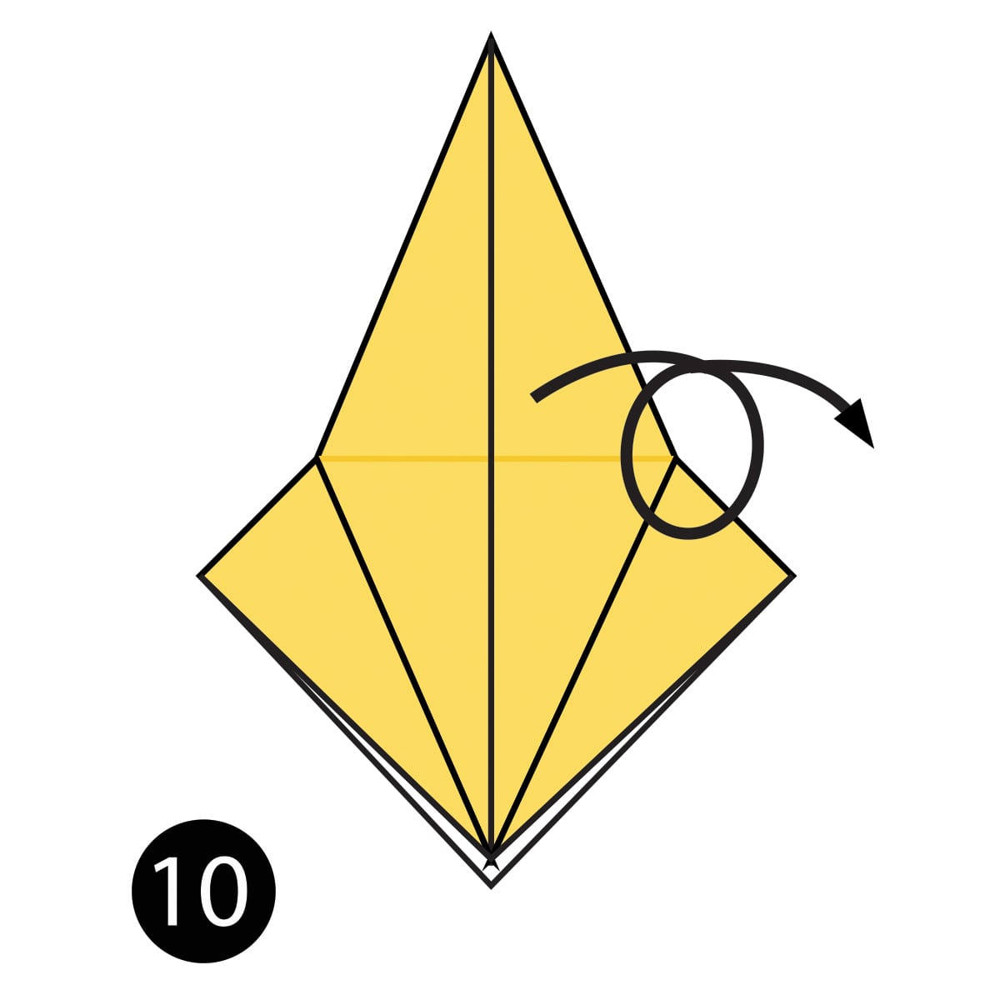
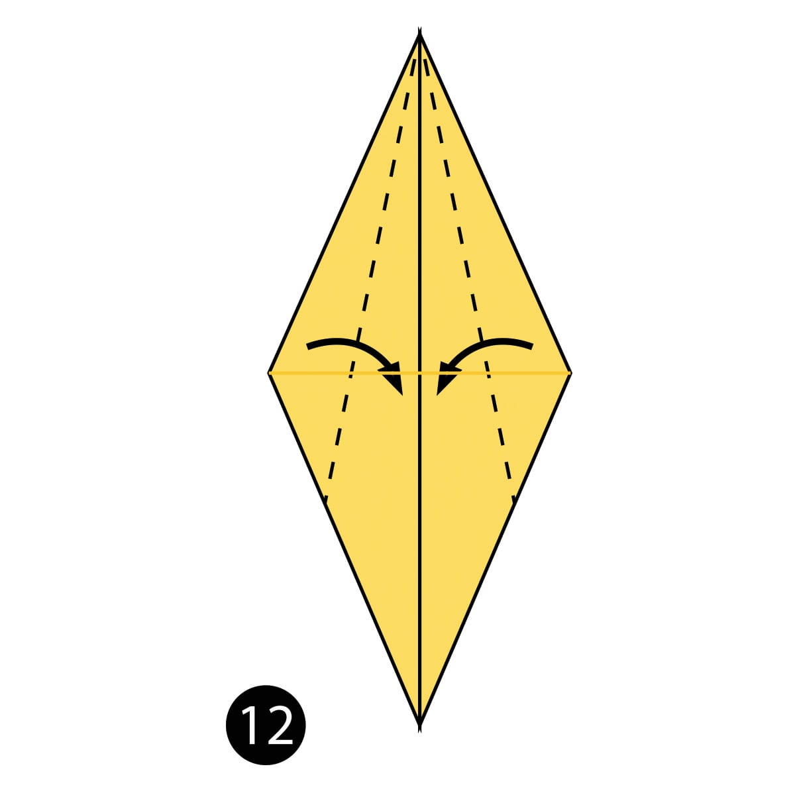

ORIGAMI DESIGN
Origami Design
CAMEL

Step 1) Fold the paper in half
Step 2) Fold the paper in half again.
Step 3) Open the top flap of paper over to the right.
Step 4) Squash Fold this flap down.

Step 5) Turn the paper over.
Step 6) Open the top flap of paper over to the left and Squash Fold it down.
Step 7) Fold and Unfold the sides and the top along the dotted lines. You’ll use these creases in
the next step.
Step 8) Open up the top layer of paper and fold it up using the crease from the previous step.
Step 9) Fold in both sides along the existing creases making a Petal Fold.

Step 10) Turn the paper over.
Step 11) Repeat steps 7-9 on this side

Step 12) Fold both sides to the centre along the dotted lines. Then repeat on the other side.
Step 13) Inside Reverse Fold up both sides of the paper
Step 14) Reverse Fold the back part down to make the back legs.
Step 15) Fold the top flap of paper down and repeat on the other side to make the front legs.
Step 16) Reverse Fold the tip down to make the head.
Step 17) Inside Reverse Fold the tip of the head.
Step 18) Fold the back of the leg inside the model along the dotted line. Repeat on the other side.
Your paper Camel is complete